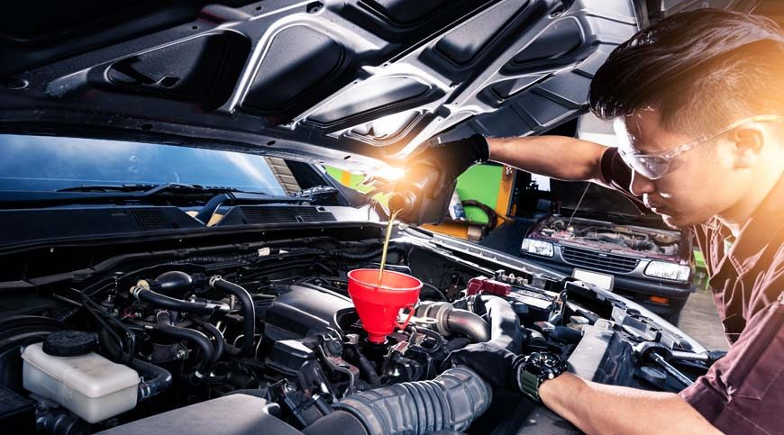
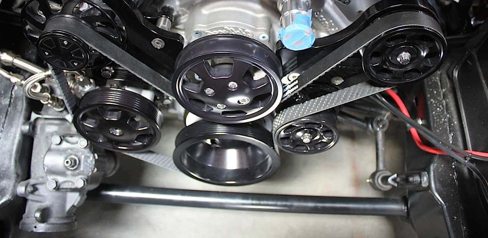
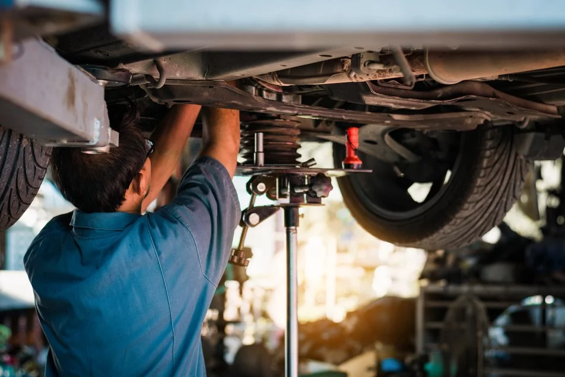
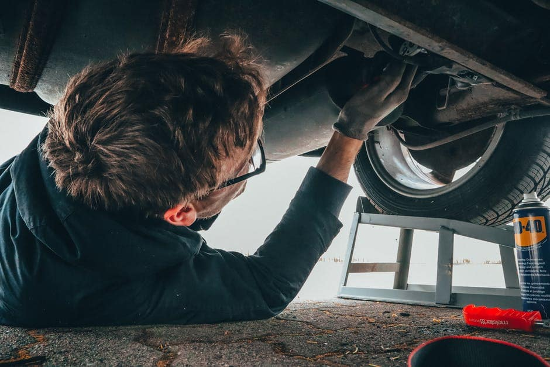
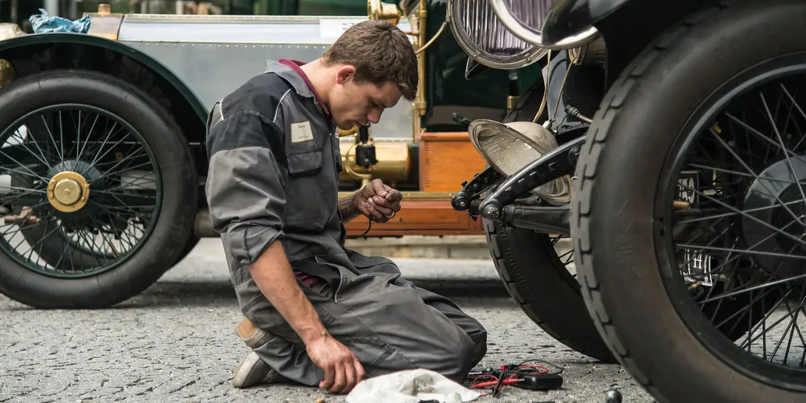
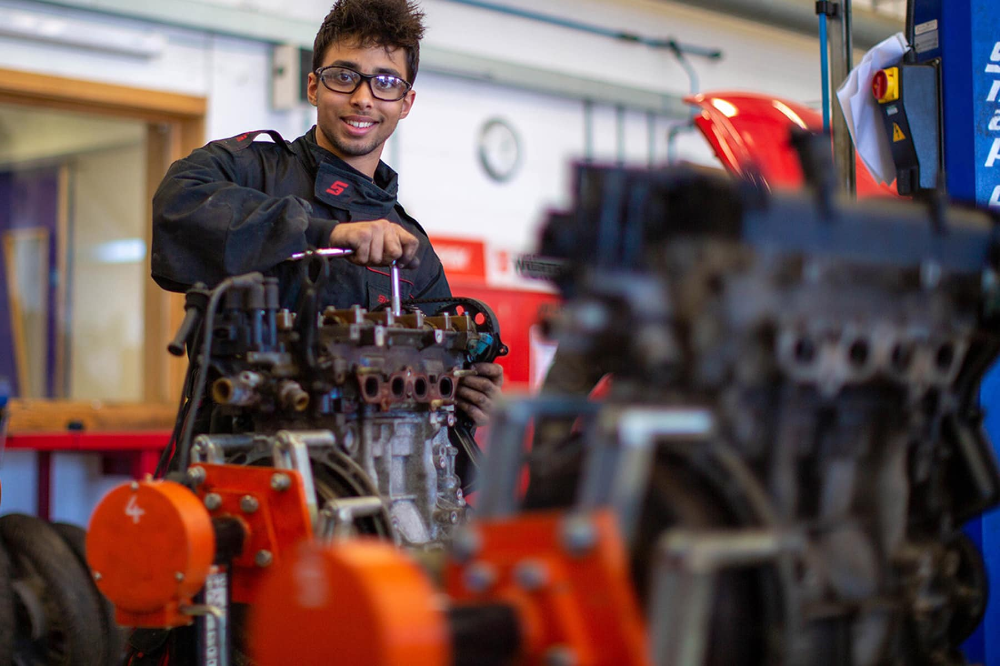
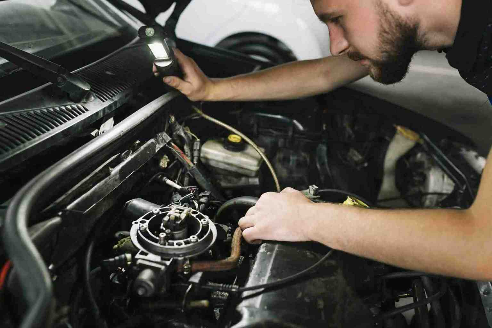
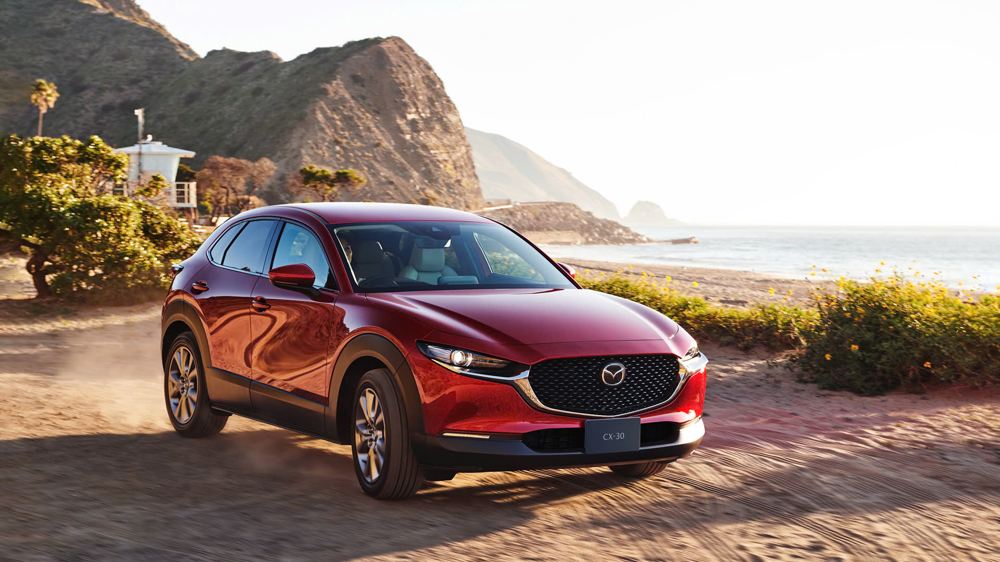
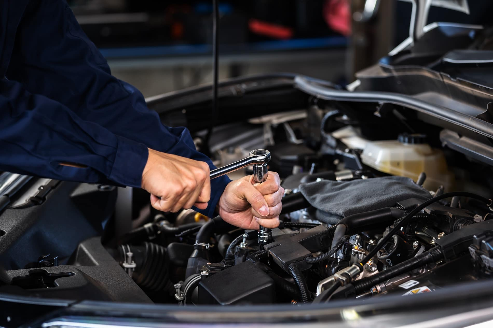
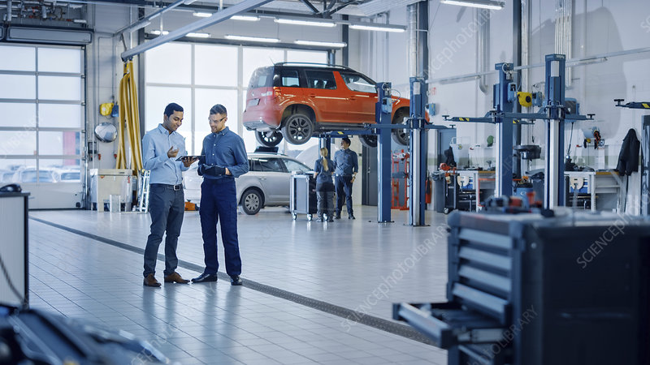

What is car Maintenace
Car maintenance is fixing or replacing broken down car parts to address wear and tear issues. Regular car maintenance on time will help the car limit damage, operate stably, improve its lifespan, and meet safety and environmental regulations.
Maintenace category
Change engine oil: Replace every 5,000 km or 6 months. Engine oil has the effect of lubricating, cooling, cleaning, anti-rust ... for automobile engines. If the engine oil is not replaced periodically, it will cause the engine to wear out quickly, be easily damaged, and the car will overheat.
Engine oil filter: Replace periodically every 10,000 km. The engine oil filter removes impurities before the oil enters a new lubrication cycle. If the oil filter is not replaced periodically then the oil quality will be affected.
Replace engine air filter: Periodically clean every 10,000 km, periodically replace every 20,000 - 30,000 km. The engine air filter removes dust and dirt from the air before it enters the combustion chamber. If the air filter is not replaced periodically, the filter may become clogged with dirt. This prevents air from entering the combustion chamber, affecting the air-to-air ratio.
Fuel filter: Replace every 40,000 km or 2 years. The fuel filter removes impurities before the fuel enters the combustion chamber. If the fuel filter is not replaced periodically, the fuel can become contaminated, reducing combustion efficiency, affecting engine power.
Spark plugs: Clean periodically every 20,000 km, periodically replace every 40,000 km with normal spark plugs, every 100,000 km with Iridium spark plugs. Spark plugs are responsible for creating sparks that ignite the mixture of fuel and air for the engine to work. After working for a long time, spark plugs are easy to get dirty, worn, flowing... leading to weak ignition, slow ignition, no ignition, etc., so they need to be cleaned and replaced periodically.
Injectors: Periodic cleaning every 20,000 km. The injector is responsible for injecting fuel to create combustion inside the combustion chamber. After a long time working, the injectors are often stuck with a lot of soot and dirt, so they need to be cleaned.
Engine coolant: Check and replenish periodically every 10,000 km, periodically replace every 40,000 - 60,000 km. Coolant has a cooling effect on car engines. After working for a long time, engine coolant can get dirty, degraded, etc. need to be checked and replaced periodically.
Check valve clearance adjustment: Periodic check every 40,000 km. When the engine is working, the valve is exposed to high-temperature combustion gas, so it is easy to expand. Therefore, it is necessary to have a gap so that when expanded, it can still close at the end of the compression stroke. However, if the gap is too large, it will cause the valve opening/closing time to be incorrect. Therefore, it is necessary to regularly check and adjust the valve clearance to the correct standard.
Camshaft drive belt: Replace periodically every 100,000 km. The cam belt connects the camshaft flywheel and the crankshaft to create a synchronized and matched movement. After a long time working, the cam belt is often worn, cracked, etc., so it needs to be replaced periodically.
Engine belts: Periodically check every 100,000 km (replace if necessary). The engine belt helps the machine drive the air conditioning system, water tank, power steering pump, generator... After a long time of working, the belt can wear and crack, so it needs to be checked periodically and replaced when being downgraded.
Idle speed adjustment test: Periodic check every 100,000 - 120,000 km. The idle control valve helps control the engine speed at idle. After a long time of working, sometimes the valve will be misaligned, so it needs to be checked and adjusted.
gearbox oil: Replace periodically every 40,000 - 60,000 km. Gear oil has the effect of lubricating, cleaning, and preventing rust for the components inside the gearbox. After a long time of working, the number of oil boxes will be dirty, degraded, uncertain level ... so it needs to be replaced periodically.
Change the axle oil (transmission oil): Replace periodically every 40,000 km. Bridge oil has a lubricating effect, reducing friction for the communication system.
Check and maintain front/rear brakes: Periodically check every 10,000 km or 6 months. The car brake system must operate with high frequency in harsh conditions due to the large frictional force. Therefore, it is necessary to check thoroughly. Brake test items include checking brake pads, brake cylinders, brake boosters, brake pedals, ABS brakes, etc.
Check and adjust the parking brake: Periodically check every 20,000 - 40,000 km. The parking system helps to determine when the vehicle is parked. Although the parking brake has to withstand less load than the foot brake, it works more, so it also needs to be checked and adjusted periodically.
Change brake fluid: Periodically check every 10,000 km, change periodically every 2-3 years. Brake fluid is responsible for transmitting force to the brake system. However, after a long time of working, brake fluid is often contaminated with water, making it easy to absorb moisture, in addition, the oil is also contaminated. That needs to be replaced periodically.
Tire rotation: Rotate tires periodically every 10,000 km. Because the weight is unevenly distributed across the axles, the tires will wear unevenly. Therefore, it is necessary to rotate the tires periodically to help the tires wear evenly, making the most of the life of the tires.
Check the air conditioning, fan, heating system: Periodically check every 5,000 km or 6 months. Check and clean the air conditioner filter, clean the cooler (every 40,000 km), change the gas filter (every 2 years), check the gas/replenish refrigerant if lacking...
Check ventilation valves, crankcases, pipes and connections:Periodically check every 20,000 – 40,000 km./p>
Check the car horn system: Periodically check every 5,000 km or 6 months.
Check the dust-proof rubber and rollers: Periodically check every 10,000 km or 6 months.
Check suspension system (shock absorbers, springs...), transmission shaft dustproof rubber: Periodic check every 10,000 km or 6 months.
Exhaust system check: Periodic check every 10,000 km or 6 months.
Check fuel tank cap, pipes, fuel system connections: Periodically check every 10,000 km or 6 months.
Check steering wheel rotation speed, link bars, steering wheel: Periodically check every 10,000 km or 6 months.
Check windshield washer fluid, wipers: Periodically check every 5,000 km or 6 months.
Check tire pressure, tire wear: Periodically check every 5,000 km or 6 months.
Check battery, electrode wear:Periodic check every 5,000 km or 6 months.
Check vehicle lights system: Periodically check every 5,000 km or 6 months.
Regulation of car maintenance time
According to car maintenance schedules of car manufacturers, maintenance is usually calculated in kilometers or vehicle operating time, whichever comes first. Most people will follow a guaranteed schedule based on the number of kilometers traveled.
However, time is also an important factor to consider when servicing your vehicle. Even if the car has not traveled the specified number of kilometers, it is still necessary to take the car for maintenance when the maintenance deadline is reached.
Maintenance Level 1 (5,000 km)
Level 1 maintenance happens when the vehicle has traveled 5,000 km or every 3 months, whichever comes first. Maintenance categories for 1 car include:
- Change engine oil
- Check windshield washer fluid, wipers
- Check the car brake system
- Check the air conditioning system, fan, heat sink...
- Check brake pressure, vehicle brake speed
- Look up the rule flask, electrode wear
- Check the car light system 
Level 2 maintenance (10,000 km)
Level 2 maintenance schedules for when the vehicle has traveled 10,000 km or every 6 months, whichever comes first. Level 2 maintenance for cars include:
- Items maintenance level 1
- Change engine oil filter
- Clean the air filter
- Check/replenish cooling water
- Check/replenish power steering fluid
- replenish brake fluid
- Check and protect front/rear brakes
- Check for rollers, rubber dust
- Check suspension, transmission system dustproof rubber
- Check the exhaust system
- Check fuel tank, piping, data system connector
- Check steering clearance, link bar, steering size
- Rotating tires 
Maintenance level 3 (20,000 – 30,000 km)
Level 3 maintenance scheduled for when the vehicle has traveled 20,000 - 30,000 km or after 1 year, whichever comes first. Level 3 maintenance items for cars include:
- Items maintenance by level 2
- Replace the air filter
- spark plugs cleaning
- Check and adjust parking brake 
Maintenance level 4(40.000 km- 60.000 km)
Level 4 maintenance is carried out when the vehicle has traveled 40,000 - 60,000 km or after 2-3 years, whichever comes first. The categories of protection level 4 cars include:
- Items maintenance by level 3
- Check valve clearance adjustment
- Change filter
- Change engine coolant
- Change brake fluid
- Change power steering oil
- Change gear oil
- Change the bridge oil
- Replace spark plug (if using normal spark plug) 
Car maintenance schedule
Mazada car maintenance schedule
According to the Mazda maintenance schedule, the car needs to be serviced for the first time after the first 1,000 km. The time for the next maintenance are every 5,000 km or every 3 - 6 months (whichever comes first) with specific distances such as 5,000 km, 10,000 km, 15,000 km, 20,000 km, 25,000 km...
Honda car protection schedule
According to the Honda car maintenance schedule, the car needs to be serviced for the first time after the first 1,000 km. Subsequent periodic maintenance are every 5,000 km or every 3 - 6 months (whichever comes first). In particular, these are the following important distances: 20,000 km, 40,000 km, 60,000 km, 100,000 km, 120,000 km, 140,000 km, 160,000 km, 180,000 km, 200,000 km...
The cost of car maintenance depends on many factors such as: price list for maintenance & replacement of spare parts of each car manufacturer, maintenance level, vehicle condition, vehicle model, vehicle type... However in general, the maintenance price of popular cars usually ranges from:
- Maintenance cost for level 1 ranges from 800,000 to 1,500,000 VND
- Level 2 maintenance costs are about 1,200,000 - 2,500,000 VND
- Level 3 maintenance costs range from 2,000,000 to 4,000,000 VND
- Level 4 maintenance costs range from 6,000,000 to 10,000,000 VND
Car maintenance process
Normally, the car maintenance process will include the following steps:
- Step 1: Customer makes an appointment
- Step 2: The customer takes the car to the maintenance center according to the scheduled appointment
- Step 3: The service center receives and inspects the vehicle
- Step 4: The maintenance center informs the customer of the items that need maintenance or repair (if any), a detailed quote for the items.
- Step 5: The maintenance center conducts maintenance, repair (if any), cleans the vehicle...
- Step 6: Return the car, the customer checks and receives the car

Should the car be maintained at the company’s maintenance center?
The reason many people wonder whether to maintain their car at the company’s center or independent garage is mainly because of the cost. Usually the cost of maintaining the car in the independent garage is lower than the brand’s center. The main reason is because the independent garage has lower administrative transportation costs, the maintenance process is more flexible, so it helps to save a lot of costs, the price of spare parts is lower...
Therefore, should the car be maintained at the independent garage or company’s center? According to many people's experience, car maintenance in the independent garage, although low cost, but also comes with many risks, most often being replaced by "fake" spare parts of unknown origin, the mechanic does not have much experience, improper maintenance or mistakes… However, this does not mean that every garage maintenance will encounter this situation, but also depends on the quality of each garage.
Factory maintenance has better quality. Due to the strict working process, the replacement parts are genuine, quality assurance, good customer service... Especially the technical machinist at the company often understand more about the characteristics of the car, have more experience. better problem detection and handling.
Car maintenance at the company has a higher quality assurance but the cost is higher. If the vehicle is still under warranty, it is obvious that the vehicle should be taken to the service department at the facility. If the car is out of warranty period, car owners who want to save money can still take the car for maintenance to independent garage. However, it should be noted that only reputable, highly reliable garages should be chosen.
Especially with luxury cars or cars that are not very popular in Vietnam such as Mercedes, Audi, BMW, Lexus, Volvo, Subaru, Volkswagen, Land Rover ... should be maintained at the company.
In fact, the story of car maintenance at the company or independent garage is no longer too different nowadays. Today Vietnam has many reputable maintenance facilities, especially a number of professional auto maintenance chain systems with transparent pricing policies, modern facilities, a team of highly skilled technicians who are as good as company engineers.